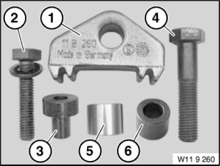

11 9 260 Holder
11 9 260 Holder
0493938
Minimum set: Mechanical tools
MW

NOTE: (Counter support with screw connection) For holding the flywheel when gearbox is removed
Storage Location: B43
SI number: 01 01 01 (662)
Consisting of:
1 = 0494034 Holder
NOTE: (Individual counter support)
2 = 0494035 Screw
NOTE: (Bolt (thread M10) with washer) For screwing counter support
3 = 0494129 Bush
NOTE: (Bush for counter support) For counter support, for retaining flywheel when gearbox is removed Engine: N62, N73
4 = 0494130 Screw
NOTE: (Bolt (thread M12)) For counter support for retaining flywheel when gearbox is removed
5 = 0494793 Bush
6 = 0495216 Bush
NOTE: For counter support, for retaining flywheel when gearbox is removed Engine: M57TU2